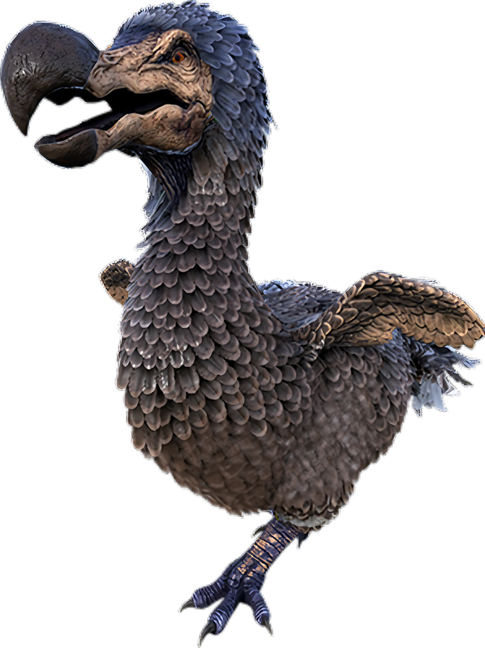

The dodo is a very small bird that makes chirping noises as it strolls throughout the beach.
Once attacked, it will attempt to flee. However, they may peck at you at random times, dealing 5 damage.
They can easily be killed with any weapon or dinosaur.
The dodo's weakness is literally everything,
The Dodo's primary weakness is its unwillingness to fight back (not the case on ARK: Survival Evolved Mobile,
as it will occasionally defend itself if it is being attacked or if it's egg is stolen). The head is extremely easy to target,
and as with most creatures, the most vulnerable body-part to damage.
A thrown Spear or Stone Arrow in its head will usually take it down in one or two shots (but it is not advised to waste those resources on Dodos).
Another weakness of the dodo is its speed. It moves so slowly, that an encumbered, injured beginner could easily keep pace with it.